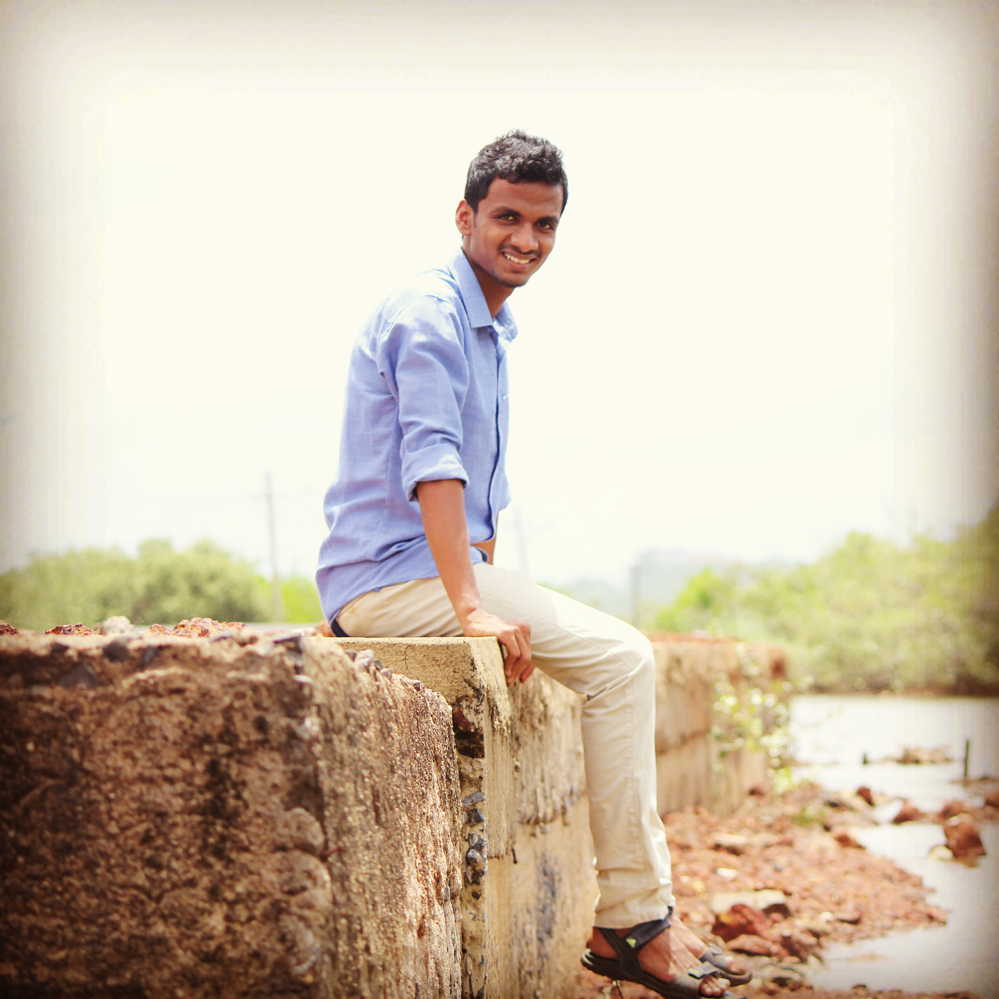

|  |
Yuvraj Mohan ArondekarH.No - 543, Shirodwadi Mulgao, Bicholim - Goa 9158841884 | yuvrajarondekar@gmail.com |
A responsible job with challenges and to use my skills to achieve company's goal.
The above mentioned project was completed successfully which was a client/server application. Blockchain technology was mainly used to add security to the current e-tendering system. In this application both the tenderer and bidder can access the application from their system.
Creative, self confident, Hardworking